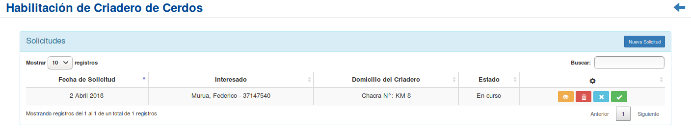
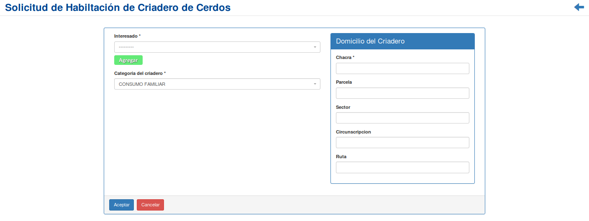
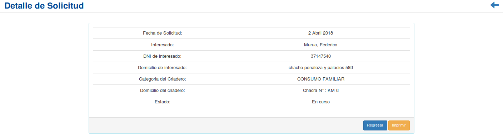
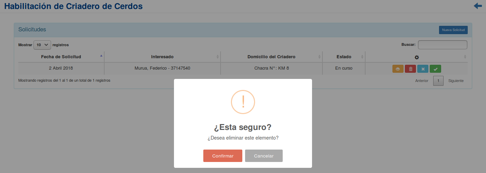
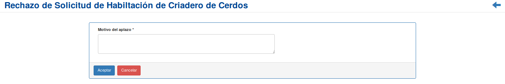
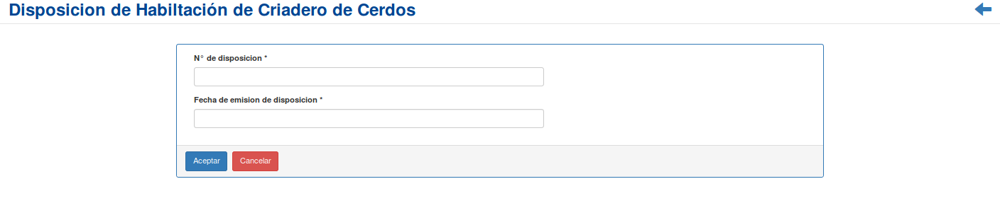

Habilitación de Criadero de Cerdos¶
Se presentará una pantalla que contendrá un listado con todas las Habilitaciones de Criadero que se encuentren registradas en el sistema hasta la fecha.
Junto con el listado, se presentarán un conjunto de funcionalidades que permitirán manipular cada Habilitación.
Estas funcionalidades son:
Además, si el usuario desea Registrar una nueva Habilitación:
Nueva Solicitud de Habilitación de Criadero de Cerdos¶
Si el usuario desea crear una nueva Habilitación, deberá presionar el botón
Nueva Solicitud.A continuación el sistema lo redirigirá a la siguiente pantalla:
En esta parte el usuario se le presentará un formulario y deberá ingresar los datos solicitados para dar de alta una nueva Habilitación.
Atención
El sistema siempre validará que la información ingresada sea correcta. En caso de que los datos ingresados sean incorrectos el sistema lo informará. En este punto, las posibles causas de errores son:
- Uno o más campos obligatorios vacíos.
- Uno o más campos con un formato incorrecto.
Una vez completado el formulario, se volverá a la pantalla que contendrá el listado de las habilitaciones.
Detalle habilitación¶
Si el usuario desea ver el detalle de una Habilitación, deberá seleccionar en la columna de acciones asociado a la Habilitación y presionar el ícono
DetalleUna vez realizado el paso anterior aparecerá la siguiente vista emergente:
En esta parte el usuario podrá observar la información adicional de la Habilitación. Si desea imprimir el detalle, deberá presionar el botón
Imprimir, de otro modo, si desea volver al listado inicial, presionará el botónRegresar.
Eliminar habilitación¶
Si el usuario desea eliminar una Habilitación, deberá seleccionar en la columna de acciones asociado a la Habilitación y presionar el ícono
EliminarUna vez realizado el paso anterior aparecerá la siguiente ventana emergente (modal):
En esta parte el usuario deberá decidir si confirma la eliminación de la Habilitación o no. Si desea confirmar la eliminación deberá presionar el botón
Confirmar, caso contrario, presionará el botónCancelar.
Aplazar Habilitación¶
Si el usuario desea aplazar una nueva Habilitación, deberá seleccionar en la columna de acciones asociado a la Habilitación y presionar el ícono
Aplazar.A continuación el sistema lo redirigirá a la siguiente pantalla:
En esta parte el usuario se le presentará un formulario y deberá ingresar los motivos por la cual se aplaza la Habilitación.
Una vez completado el formulario, se volverá a la pantalla que contendrá el listado con todas las habilitaciones.
Registrar Disposición¶
Si el usuario desea ver registrar una Disposición, deberá seleccionar en la columna de acciones asociado a la Habilitación y presionar el ícono
Registrar disposiciónUna vez realizado el paso anterior aparecerá la siguiente vista emergente:
En esta parte al usuario se le presentará un formulario y deberá actualizar los datos asociados a la Habilitación.
Atención
El sistema siempre validará que la información ingresada sea correcta. En caso de que los datos ingresados sean incorrectos el sistema lo informará. En este punto, las posibles causas de errores son:
- Uno o más campos obligatorios vacíos.
- Uno o más campos con un formato incorrecto.
Una vez completado el formulario, el usuario deberá presionar el botón
Aceptary el sistema se encargará de actualizar los datos de la Habilitación seleccionada, caso contrario, presionará el botónCancelar..